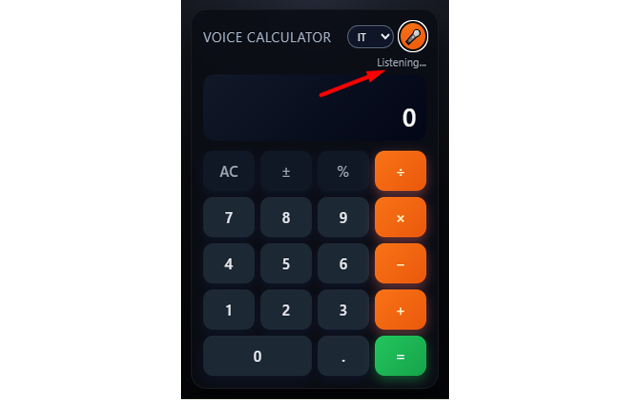

Free Voice Calculator
Free Voice Calculator is a modern, free calculator extension that lives in your Chrome toolbar. Perform quick calculations directly from the extension popup using either traditional buttons or your voice.
Just click the microphone, speak naturally, and the extension will interpret your request — even in conversational language. It supports Italian, English, Spanish and French, with smart handling of numbers, decimals, simple fractions and percentages.
Whether you’re working with prices, discounts, small conversions or everyday math, you can get instant answers without opening a separate app or leaving the page you’re on. Voice recognition is handled locally by your browser via the Web Speech API, so no personal data is sent to external servers.
Install Free Voice Calculator from the Chrome Web Store✨ What it can understand
The extension is designed for natural, spoken math in multiple languages. Example phrases:
- “How much is 27.4 divided by 4.3?”
- “Twenty-three times seven”
- “Cuánto es 15 entre 3”
- Italian decimal style such as “ventisette virgola uno per zero virgola zero zero uno”
It understands natural connectors like “how much is…”, “what is…”, “cuánto es…”, “quanto fa…” and more, then extracts the underlying operation for an accurate calculation.
✨ Main Features
- Full basic calculator: all standard operations (addition, subtraction, multiplication, division).
- Advanced voice input: speak your calculation instead of typing it.
- 4 language support: Italian, English, Spanish and French.
- Natural phrase recognition: understands phrases like “how much is…”, “what is…”, “cuánto es…”.
- Smart decimal parsing: interprets decimals and thousands correctly based on spoken input.
- Multi-language UI: messages and interface texts adapt automatically to your browser language.
- Instant answers: get results immediately without opening a new tab or external app.
- Privacy-safe: no personal data collection, voice handled by the browser’s own APIs.
🛠 How to use
- Install Free Voice Calculator from the Chrome Web Store.
- Click the calculator icon next to the address bar to open the popup.
- Use the on-screen keypad for manual calculations or press the microphone button.
- On the first use, grant microphone access when Chrome asks for permission.
- Speak your operation clearly (for example: “twenty-seven point one times zero point zero zero one”).
- The recognized expression is parsed and the result appears instantly in the calculator display.
- You can continue using either voice or buttons for subsequent calculations.
👍 Why use it?
- Quick math without context switching: do calculations without leaving your current page.
- Perfect for people who work with numbers: prices, discounts, taxes, small conversions.
- Great for students and teachers: quick checks during study or while preparing lessons.
- Helpful for accessibility: ideal for users who prefer speaking rather than typing.
- Lightweight and always at hand: one click in the toolbar opens the calculator anytime.
📷 Screenshots


🛡 Privacy
Free Voice Calculator is built with privacy in mind:
- The extension does not collect or store personal data.
- Voice recognition is handled directly by the browser (Chrome) via the Web Speech API.
- No audio is sent to custom servers by this extension.
- No account, login or registration is required.
To work correctly, the extension typically requires:
- Microphone permission: requested and controlled by Chrome when you enable voice input.
- Storage: to remember language preferences and simple settings.